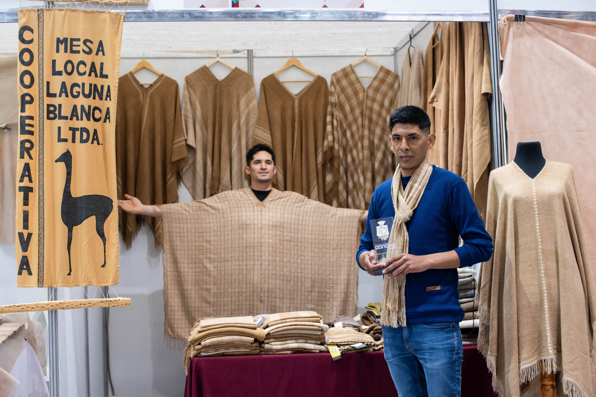
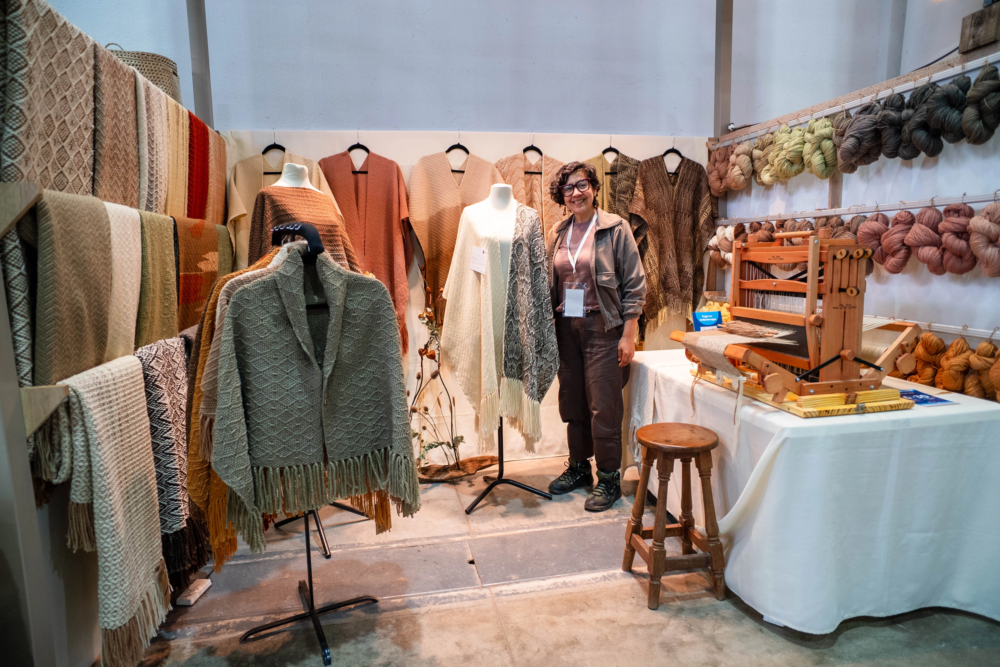
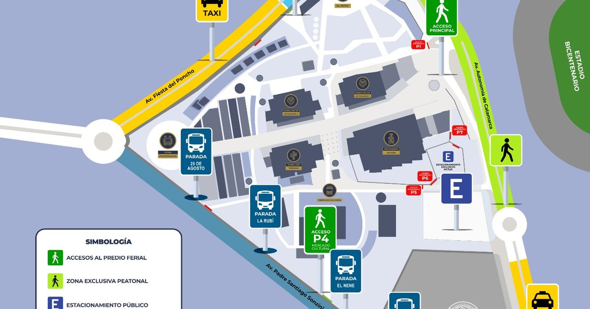

Información sobre Artesanos
PróximamenteConocé la trayectoria, localidad de origen y especialidad de cada uno de los expositores de la fiesta.
Ver ExpositoresTe damos la bienvenida a la plataforma oficial de artesanos y productores de la Fiesta Nacional e Internacional del Poncho. Este espacio digital está diseñado para mejorar la experiencia de los visitantes y fortalecer la difusión de los emprendimientos locales.



Cada año, miles de personas recorren nuestros pabellones para conocer y adquirir productos artesanales, textiles, regionales y culturales. A través de Poncho Digital podrás encontrar información sobre la trayectoria de los artesanos, sus localidades de origen, la oferta de productos y la ubicación de los stands dentro del predio.
Conocé la trayectoria, localidad de origen y especialidad de cada uno de los expositores de la fiesta.
Ver Expositores¿Sos artesano o productor? Postulá tu emprendimiento para solicitar tu participación en la feria.
Postularme